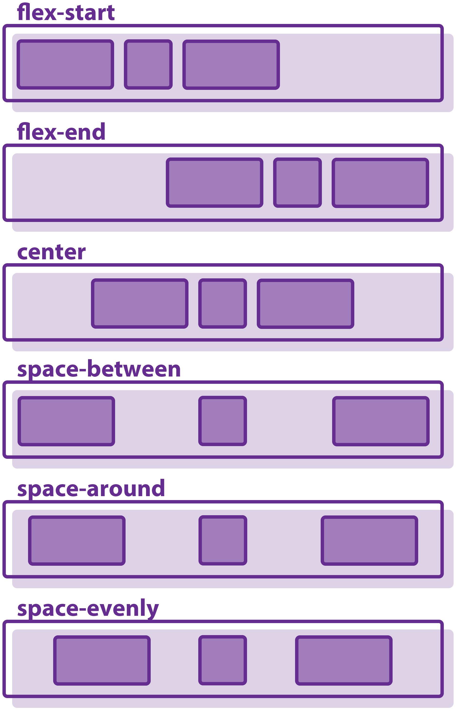

Debido a que actualmente la educación presenta nuevos retos, se propone elaborar un recurso educativo digital para desarrollar competencias y dinamizar estrategias de aprendizaje en relación con los temas Flex Box, Listas y enlaces.
FlexBox

Es una herramienta poderosa para crear diseños con CSS. No es tan poderoso como CSS Grid, pero puede resolver muchos problemas de diseño.
Flexbox es un diseño unidimensional que puede colocar elementos horizontal o verticalmente (pero no ambos).
Un elemento que usa flexbox como diseño se conoce como contenedor flexible, y los elementos dentro de él son elementos flexibles.
Cuando los elementos se presentan como cajas flexibles, se distribuyen con respecto a dos ejes:
El eje principal (main axis) es el eje que corre en la dirección en que se colocan los elementos flexibles (por ejemplo, según se disponen las filas en una página o hacia abajo según se disponen las columnas en una página). El inicio y el final de este eje se denominan inicio principal (main start) y final principal (main end).
El eje transversal (cross axis) es el eje que corre perpendicular a la dirección en la que se colocan los elementos flexibles. El inicio y el final de este eje se denominan inicio transversal (cross start) y extremo cruzado (cross end).
El elemento padre que tiene establecido display: flex (el elemento section en nuestro ejemplo) se llama contenedor flexible.
Los elementos que se presentan como cajas flexibles dentro del contenedor flexible se denominan elementos flexibles (son los elementos article de nuestro ejemplo).
Attardi, J. (2020). Flexbox. In Modern CSS (pp. 205-228). Apress, Berkeley, CA.
https://developer.mozilla.org/es/docs/Learn/CSS/CSS_layout/Flexbox
Listas y enlaces
Las listas
Las listas se emplean para presentar de forma ordenada una serie de líneas.
Éstas pueden ser ordenadas, desordenadas y de definición.
Lista desordenada, ul
ordenada, ol
de definición, dl
Hay que destacar que los tipos de listas pueden combinarse entre sí,
pero siempre se debe indicar la etiqueta correspondiente donde comienza la lista,
donde comienza y termina cada elemento de dicha lista y finalmente, el final de la misma.
Listas desordenadas
Las listas desordenadas van dentro de la etiqueta ul HTML y de su cierre /ul. Cada punto que queramos añadir a la lista, lo haremos dentro de la etiqueta li y su cierre.
Si no le indicamos nada a la etiqueta li HTML, ésta se generará de forma automática. Pero si queremos definir nosotros mismo el símbolo del punto, podemos gracias al atributo “type”.
Así podemos hacer que la lista esté definida por puntos negros (li type=”disc”), por puntos con el fondo blanco (li type=”circle”) o por cuadrados (li type=”square”). Aunque esta apariencia dependerá del navegador. Hay algunos navegadores que dan otras apariencias a estos mismos atributos.
Listas ordenadas
Las listas ordenadas van enmarcadas dentro de las etiquetas ol /ol. Cada punto de la lista se escribe con la misma etiqueta que en las no numeradas: li. Pero al ser listas ordenadas los símbolos serán números y éstos se irán generando automáticamente por orden, conforme escribamos nuevos puntos.
las listas ordenadas podemos hacer que el primer punto comience con el número que nosotros queramos. Lo conseguiremos gracias al atributo “value”. Los siguientes puntos que escribamos se generarán automáticamente por orden, partiendo de ese número.
Listas de definición
Si lo que vamos a hacer es un listado de definiciones, podemos usar las etiquetas dl, dt y dd. Vamos a explicarlas por partes:
La etiqueta dl viene de los términos ingleses “Definiton list” y nos indica que dentro de ella, entre ella y su cierre, va a ir una definición.
La etiqueta dt viene de los términos “Definition term” y dentro de ella irá el término que vamos a definir. Para entendernos mejor, dentro de dt iría el título de la definición.
La etiqueta dd viene de los términos “Definition description” y nos dice que dentro de ésta irá la definición.
Los enlaces
Cualquier elemento de un documento XHTML puede ser definido como enlace.
Por lo tanto, imágenes, párrafos de texto o bloques pueden especificarse como enlaces
a otros puntos del mismo documento o de la red.
Estructura de los enlaces
La estructura de un enlace está formada por la etiqueta a seguida de determinados atributos.
Existen varios tipos de enlaces:
Enlaces a páginas o documentos externos
En donde con la etiqueta ref se relaciona la url de dicho sitio.
Enlace a un punto de la misma página
Cuando se trabaja con documentos muy extensos o índices se suelen poner enlaces desde el principio del documento al final del mismo y viceversa, así agiliza la tarea al usuario que visualiza el documento.
Enlaces a otras páginas locales
Cuando se dispone de varias páginas en un site, es normal que se elacionen entre estas. La URL de la página o elemento a enlazar puede referenciarse de forma Relativa o Absoluta.
Un enlace relativo depende de la posición de la página origen y página destino. En este tipo de enlace se suprime el protocolo y el nombre del servidor.
Un enlace absoluto es aquel que no necesita información adicional para localizar el recurso enlazado. Es la ruta completa hacia dicho recurso.
Cabello, J. C. O. (2006). Diseño de páginas Web con XHTML, JavaScript y CSS. Grupo Editorial RA-MA.